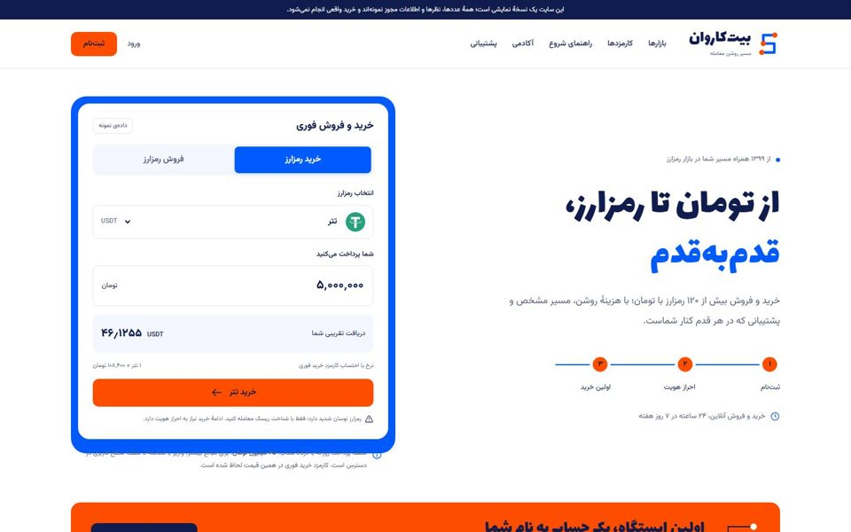
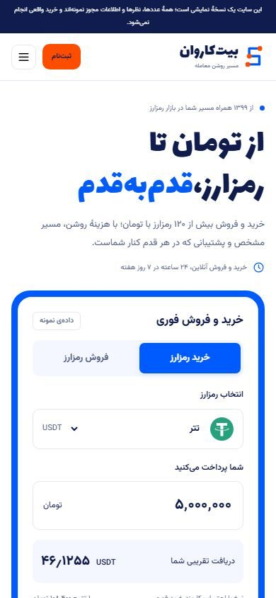
ث، مسیر کاروانباز کردن صفحهی زندهی ث
صرافی ساختگی است: بیتکاروان در تهران. صفحه با پرامپت نسخهی صفر ساخته شده که از اصول کلی طراحی درآمده است. GPT مدل gpt-6.1-sol اول شش عکس عمومی سفارش داد که gpt-image-2 ساخت، بعد صفحه را نوشت. مرجع نوبیتکس و والکس بود و فهرست بخشها از الگوی صرافیهای ایرانی آمد. این طرح «الف» است. ب، پ و ت با نسخهی یک پرامپت ساخته شدهاند: اول یک فاز خلاقیت سه جهت هویت بصری داد، هر کدام با پالت، فونت تیتر و یک عنصر امضای جدا، و بعد برای هر جهت یک صفحهی کامل ساخته شد. ب «منزلبهمنزل» است، از معنای کاروان: مسیر خرید با ایستگاههای شمارهدار. پ «سایهی ولیعصر» است، از نشانی دفتر: ریتم عمودی تنهی چنارها. ت «دفتر تومان» است، از خود محصول: سطرهای حساب با خطکشی دفتری. ث، ج و چ با نسخهی دو ساخته شدهاند: زمینهی سفید، رنگ برند پررنگ در سطحهای بزرگ، لوگوی رنگی رمزارزها و ترکیب صفحهی اولِ متفاوت در هر جهت. ث «مسیر کاروان» است با نارنجی و آبی، ج «ریتم ولیعصر» با سبز و سرخابی، و چ «تومانِ روشن» با بنفش و لیمویی. صفحهی زنده را باز کنید و تا پایین ببینید.
همهی قیمتها، عددها و نظرها نمونهاند. عکسها ساختگیاند و فقط فضای شهر را نشان میدهند. ب و ت عکس نخواستند و پ فقط یک عکس از چنارهای ولیعصر خواست.


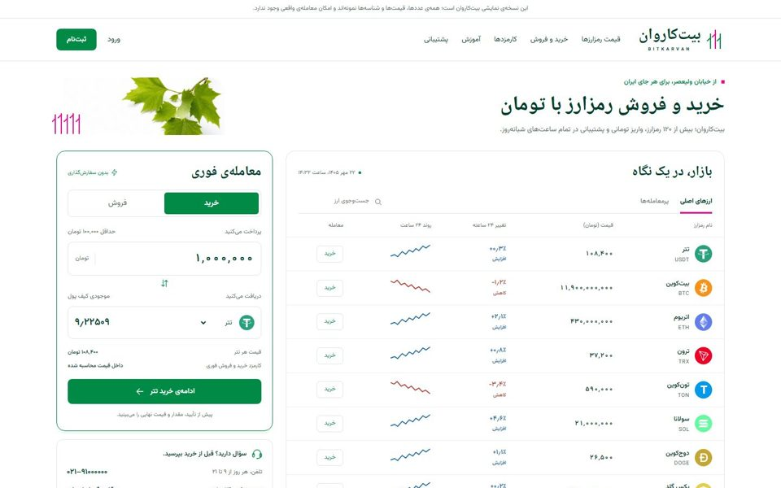
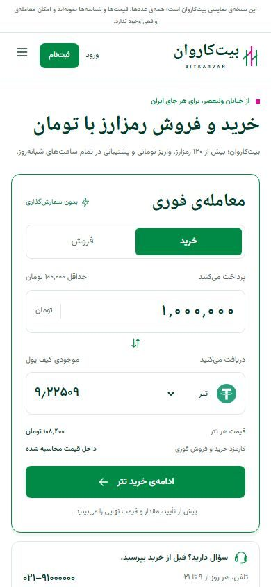
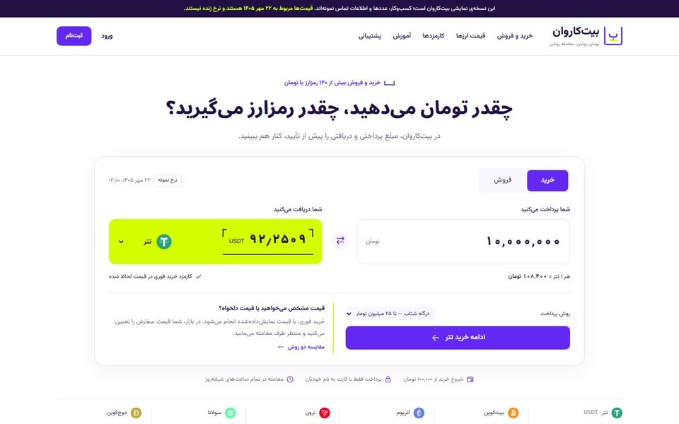
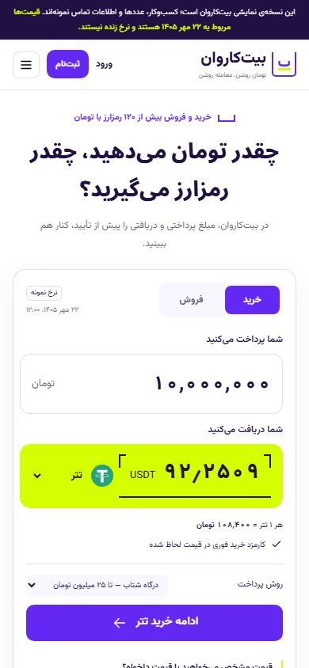
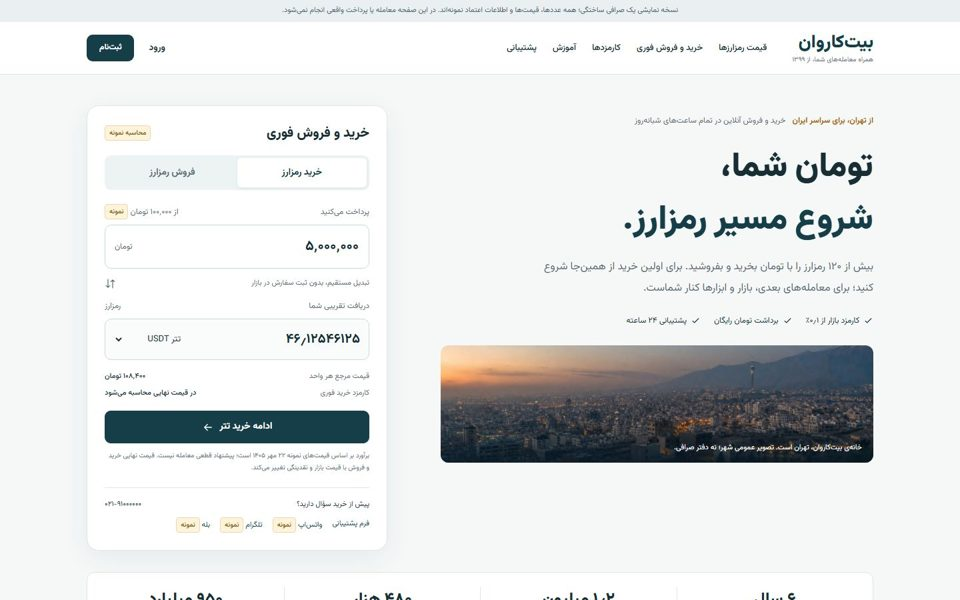
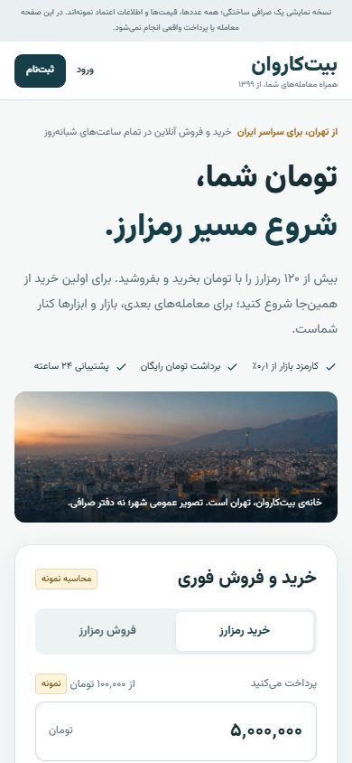
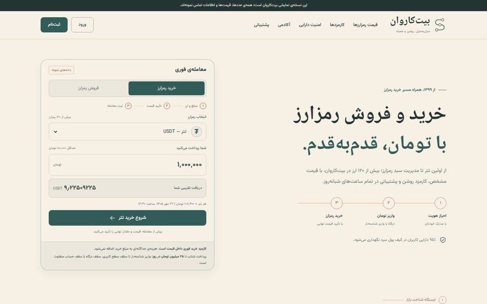
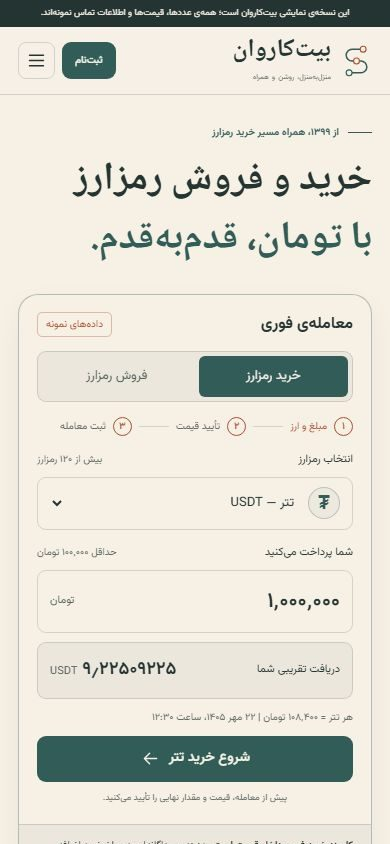
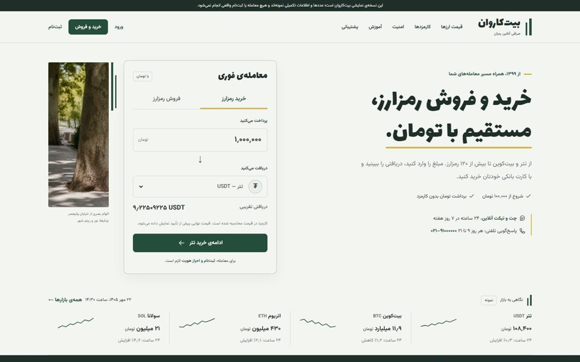
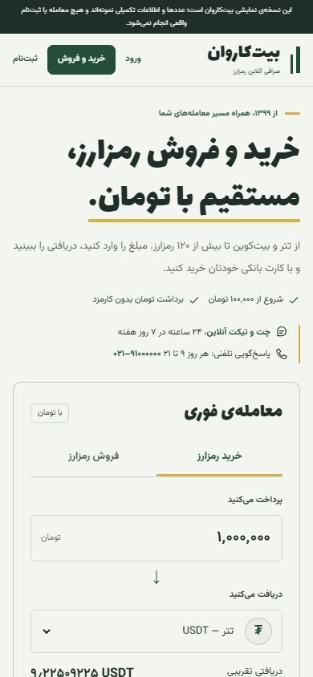
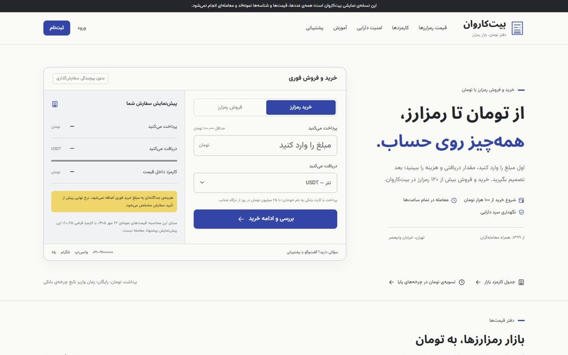
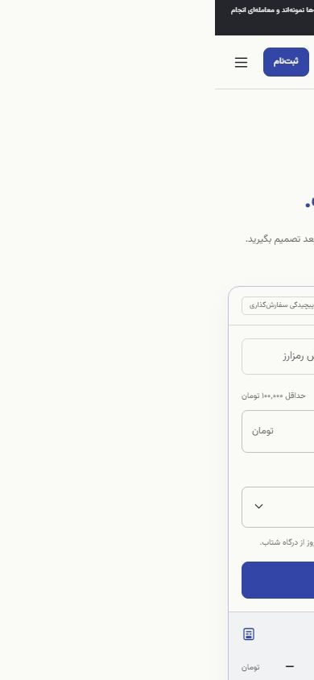